Konfigurasi ini membahas penerapan Inter-VLAN Routing dan VLAN Trunking dengan menggabungkan Router MikroTik dan Switch Cisco untuk mengoptimalkan segmentasi jaringan serta keamanan data. Melalui pendekatan Router-on-a-Stick, MikroTik mengonfigurasi sub-interface VLAN (VLAN 10, 20, dan 30) berbasis standar IEEE 802.1Q yang terhubung melalui satu jalur trunk ke Switch Cisco, sementara port-port pada Switch Cisco dikonfigurasi ke mode access untuk mendistribusikan konektivitas secara terisolasi ke PC-ADMIN, PC-GURU, dan PC-IT. Solusi ini secara efektif memperkecil broadcast domain, meningkatkan efisiensi penggunaan port fisik, serta memastikan lalu lintas data antar-departemen dapat dikontrol dengan aman dan terstruktur melalui satu pusat kendali routing.
Sebelum memulai konfigurasi, pastikan alat & bahan berikut sudah dipersiapkan :
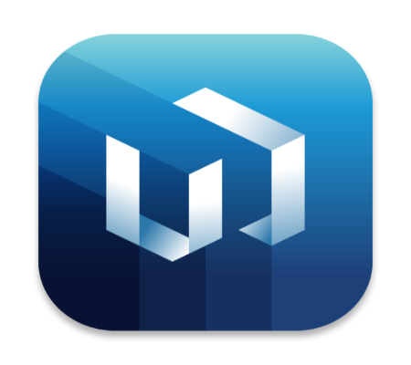
Langkah pertama adalah memahami topologi yang akan digunakan. disini router mikrotik akan menjadi gateway untuk vlan 10,20,30 dan akan mendistribusikan vlan tersebut ke cisco dengan mode trunk. sedangkan untuk cisco switchnya, akan mendistribusikan ke client dengan mode acces :
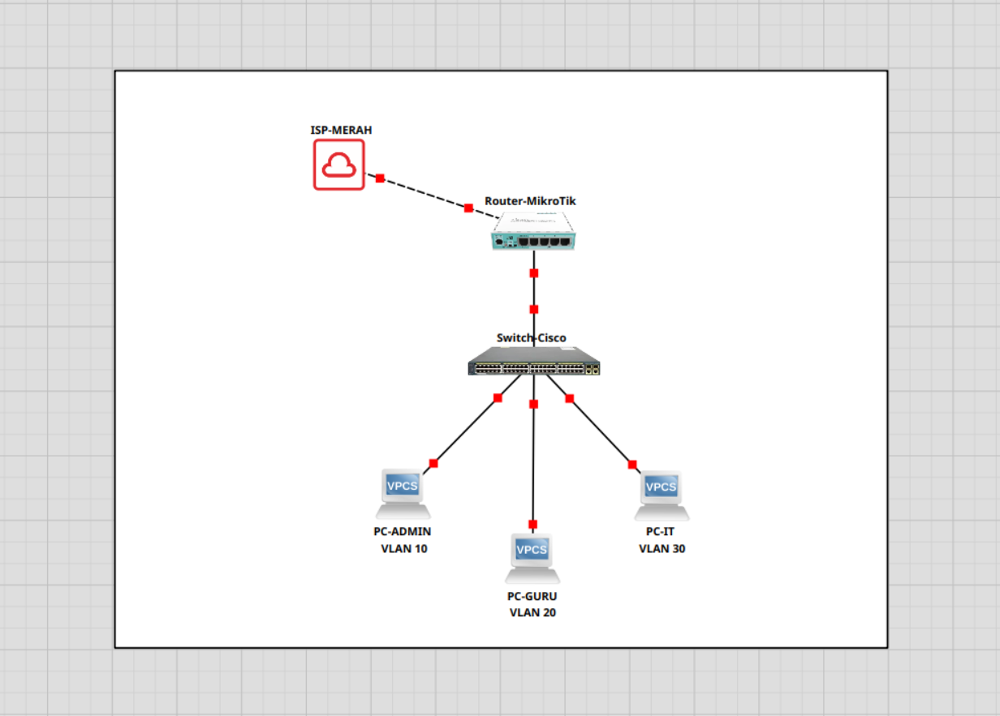
Konfigurasi ini hanya berfokus pada langkah utama. Untuk konfigurasi dasar seperti DNS, NAT Masquerade, DHCP Client / Static Route, silakan lihat pada projek sebelumnya.
Langkah selanjutnya adalah login ke aplikasi winbox :
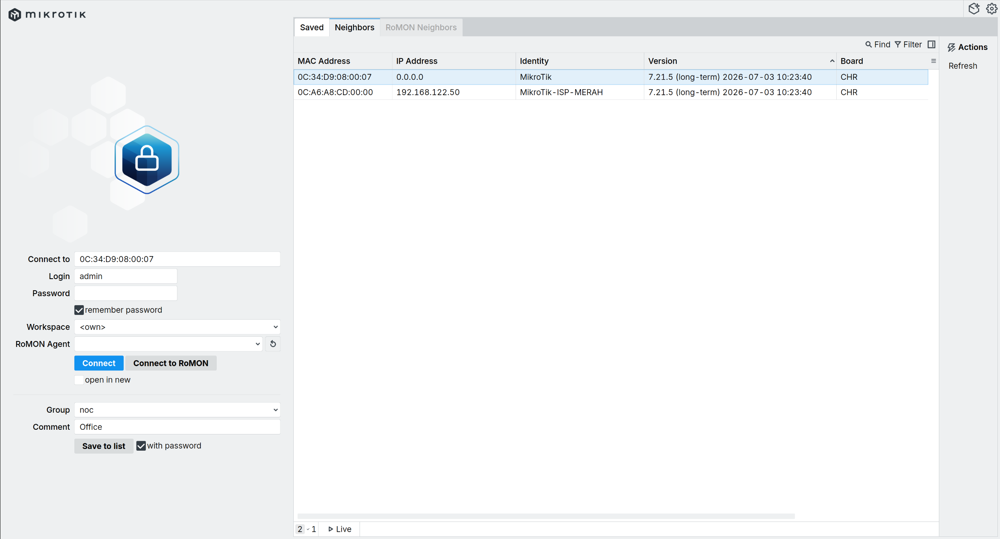
Langkah selanjutnya adalah memberi identitas pada router mikrotik :
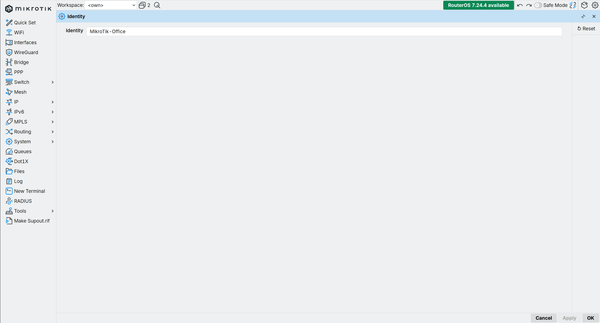
Langkah selanjutnya adalah menambahkan label pada interface / port yang digunakan di mikrotik, tujuannya agar lebih rapi dan mudah memahami topologinya :
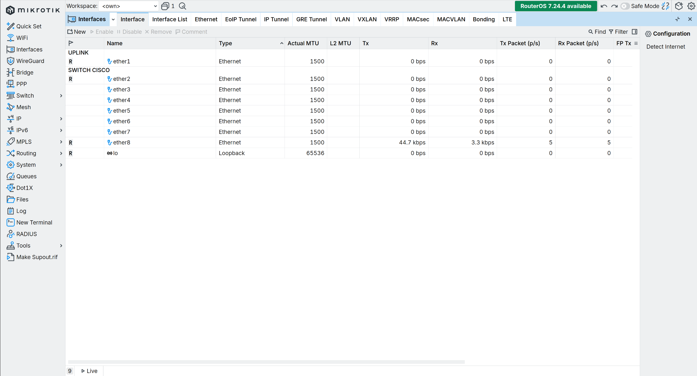
Langkah selanjutnya adalah menambahkan interface vlan yang telah ditentukan di port yang mengarah ke cisco yaitu port 2. disini vlan 99 sengaja ditambahkan sebagai vlan management :
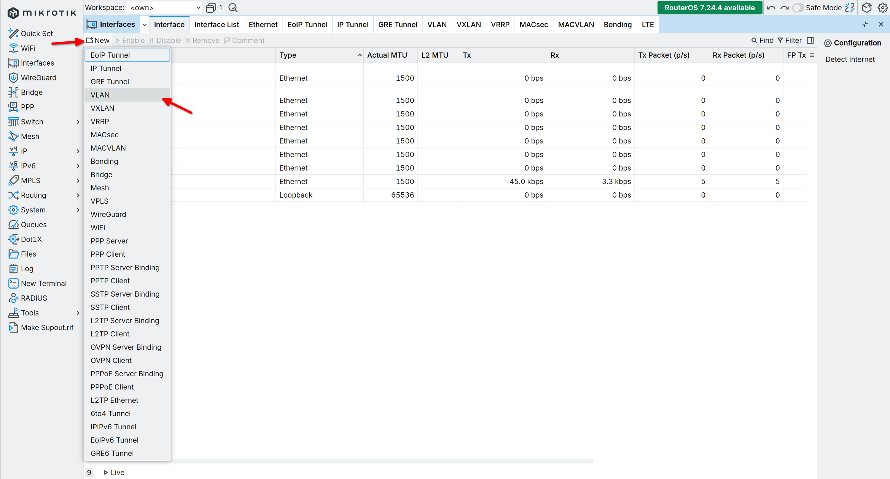
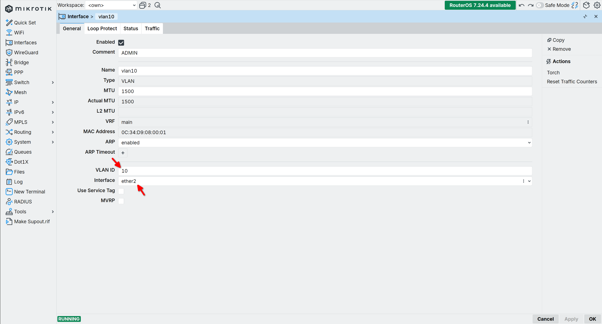
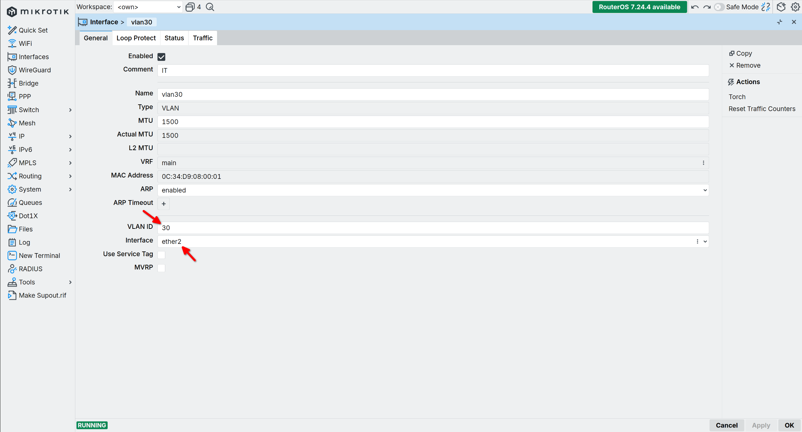
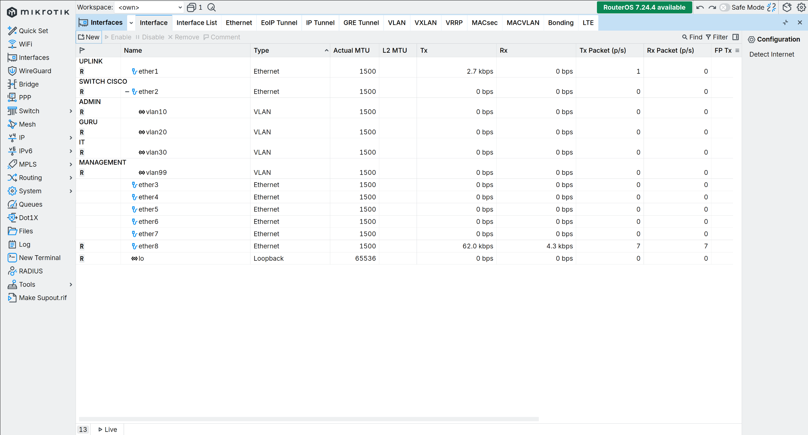
Langkah selanjutnya adalah menambahkan ip address pada masing masing interface vlan sesuai dengan skema topologi yang telah dibuat :
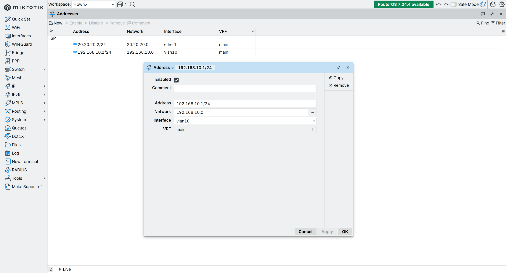
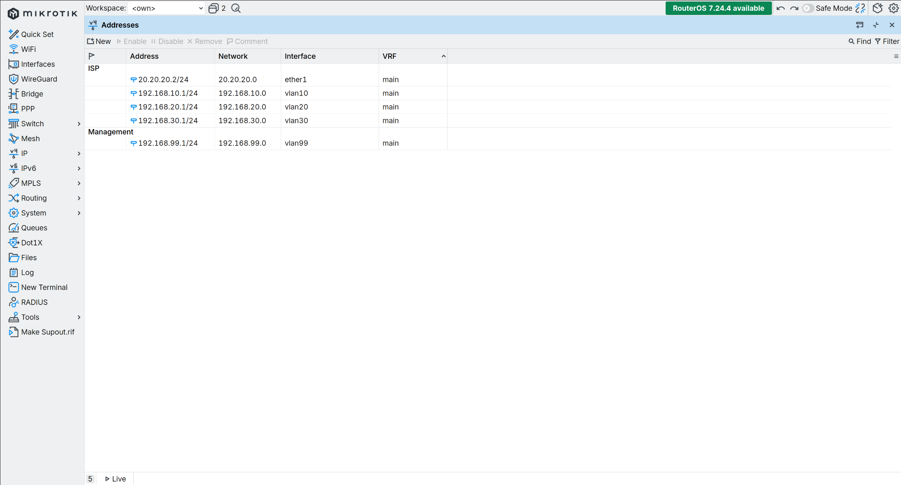
Langkah selanjutnya adalah menambahkan dhcp server pada interface vlan 10,20,30 pada menu ip-> dhcp server-> dhcp setup. dhcp server bertujuan agar ip addres dapat dibagikan secara otomatis tanpa perlu setting manual pada sisi client :
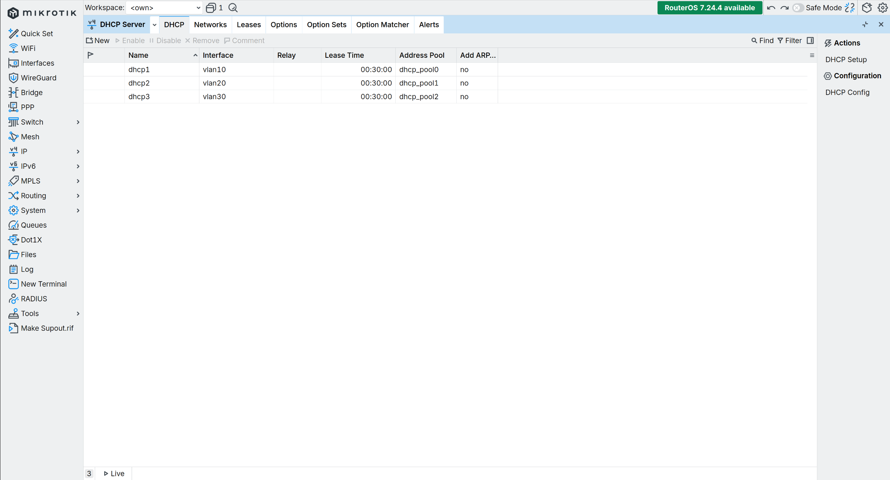
Setelah konfigurasi disisi router mikrotik selesai, langkah selanjutnya adalah konfigurasi sisi cisco switch. untuk meremote cisco switch bisa menggunakan telnet / ssh dengan putty (bila windows) atau tools lainya. setelah berhasil meremote cisco switch, bisa lanjut untuk mengganti identitas / nama switch cisco sesuai yang diinginkan. agar dapat melakukan perintah konfigurasi di cisco, pastikan sudah enable dan masuk menu configurasi terminal :
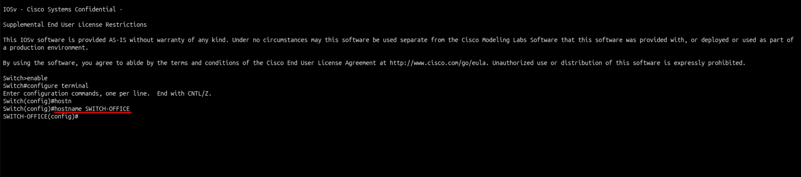
Commands :
Langkah selanjutnya adalah menambahkan interface management sesuai yang telah ditentukan sebelumnya yaitu vlan 99 :
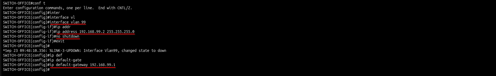
Commands :
interface vlan 99 ip address 192.168.99.2 255.255.255.0 no shutdown exit ip default-gateway 192.168.99.1
Langkah selanjutnya adalah menambahkan vlan 10,20,30 pada cisco switch :
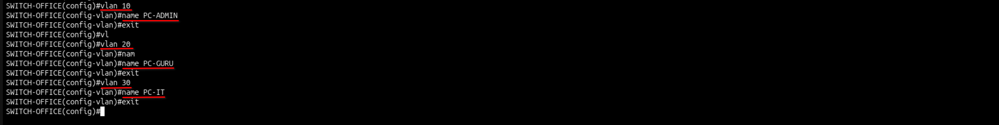
Commands :
vlan 10 name PC-ADMIN exit vlan 20 name PC-GURU exit vlan 30 name PC-IT exit
Langkah selanjutnya adalah setting mode pada port yang mengarah ke router mikrotik menjadi mode trunk, dimana mode ini dapat membawa banyak vlan sekaligus :
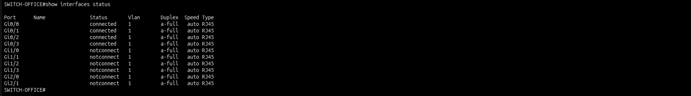
Commands :
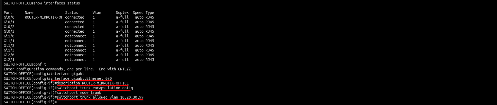
Commands :
interface GigabitEthernet 0/0 description ROUTER-MIKROTIK-OFFICE switchport trunk encapsulation dot1q switchport mode trunk switchport trunk allowed vlan 10,20,30,99 exit
Langkah selanjutnya adalah setting mode acces pada interface yang mengarah ke device client (PC ADMIN, PC GURU, PC IT). mode acces digunakan jika client hanya membutuhkan 1 vlan :
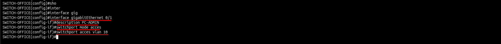
Commands :
interface GigabitEthernet 0/1 description PC-ADMIN switchport mode access switchport access vlan 10 exit
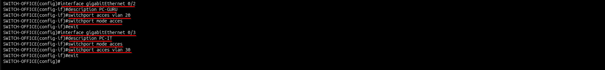
Commands :
interface GigabitEthernet 0/2 description PC-GURU switchport mode access switchport access vlan 20 exit interface GigabitEthernet 0/3 description PC-IT switchport mode access switchport access vlan 30 exit
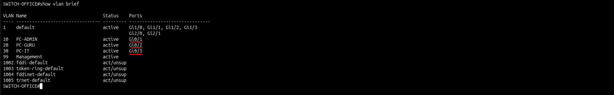
Commands :
Langkah terakhir adalah menguji konfigurasi dengan setiap device (PC Admin, PC Guru, PC IT) disetting menjadi mode dhcp serta ping ke arah gateway dan internet :
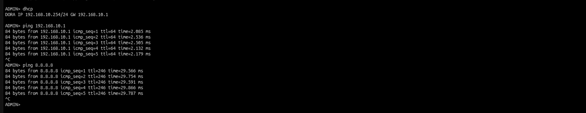
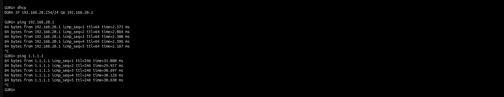
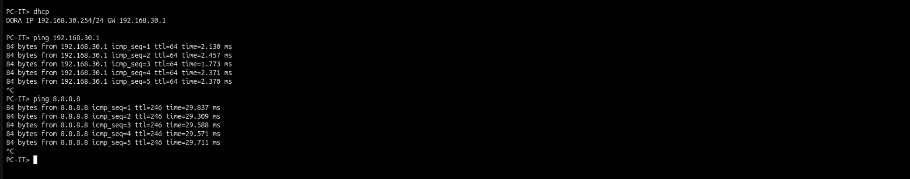